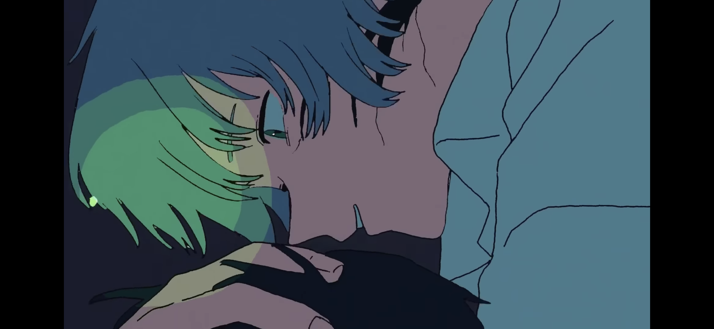

グレイくん
グレイくんは、ずっと真夜中でいいのに。の楽曲のMVに登場するキャラクター。
公式サイトからは「運命を背負いがち」と説明されている。好物は苔、スコップ、立ち入り禁止区域。苦手なものは地図、インナージョーク、レバニラ炒め。
白（うすい灰）色の長い髪に、青色の瞳をしている。過去の描写や写真では、ニラちゃん同様長袖のシャツと短袖のズボンを着用しており、靴は履かず、素足の様子が多い。

目次に戻る
"ニラちゃん"について見る
"うにぐりくん"について見る